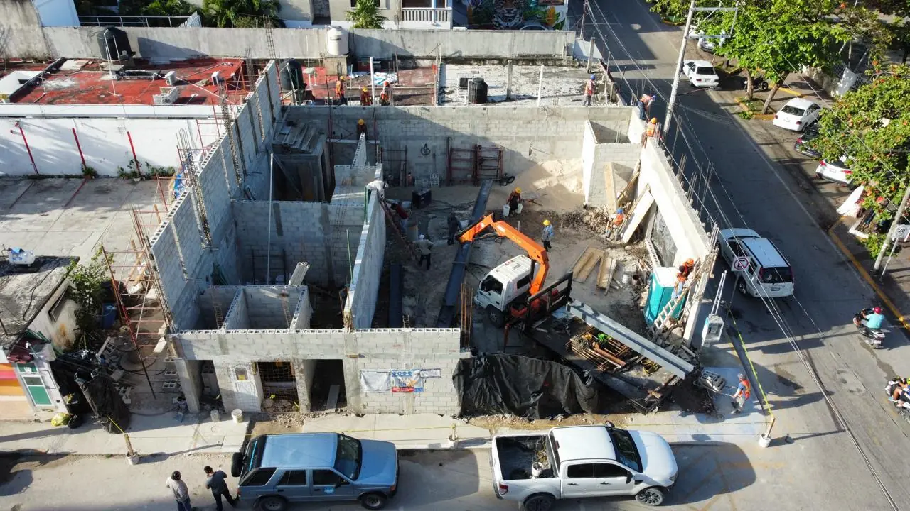

Much of Tulum, the coast between Playa del Carmen and Tulum, Holbox and many new developments have no municipal sewer, and under the Riviera Maya lies a karst aquifer where untreated water travels straight to cenotes and the reef. A hotel, condo tower or residential community here needs its own wastewater treatment plant (PTAR) that meets Mexican discharge standards, survives the climate and is simple enough for your staff to run. We design, build, equip and commission them.

Flow and load study, choice of technology (extended aeration, SBR, MBBR or MBR) and sizing for peak occupancy, not averages.
Reinforced-concrete tanks with waterproof admixtures and leak testing, excavated in rock with the right protection for karst.
Blowers, pumps, screens, clarifiers, membranes, disinfection, control panels and generator back-up.
Treated water for irrigation, toilet flushing and cooling, to NOM-003 quality, cutting potable water demand.
CONAGUA discharge permit, municipal and environmental files, and lab testing to NOM-001-SEMARNAT-2021.
Commissioning, biological start-up, operator training, maintenance plans and optional service contracts.
We size for the busiest week of high season, add equalisation for check-out peaks and design odour and noise control so the plant can sit near guest areas.
The Yucatán Peninsula sits on porous limestone with no rivers on the surface: whatever goes into the ground reaches the aquifer, the cenotes and the sea. That is why we build watertight concrete tanks and test them before backfilling, avoid absorption pits for raw sewage, and design the final disposal — reuse, sewer connection where available or a permitted deep well — together with your environmental consultant. A plant that fails here does not just smell; it can stop a hotel's operation and trigger fines.
| Project | Typical flow | Technology | Cost (MXN) |
|---|---|---|---|
| Boutique hotel / small condo | 10–50 m³/day | Compact SBR or MBBR | $0.9M–$3.5M |
| Hotel / condo tower | 50–200 m³/day | MBBR or activated sludge | $3.5M–$12M |
| Development / resort | 200–1,000 m³/day | Activated sludge or MBR | $12M–$45M+ |
Useful pages: Water Purification & Desalination · Villa Wastewater Systems · Greywater & Rainwater Reuse · Wastewater rules in karst · Home water supply & filtering
Flow study, technology options and budget for your hotel or development. Reply in 2 minutes.
Quote on WhatsAppRelated: Water Purification & Desalination · Villa Wastewater Systems · Greywater & Rainwater Reuse · Wastewater rules in karst · Home water supply & filtering · Septic systems guide · Hotel construction · Wastewater Treatment Plants — Cancún · Wastewater Treatment Plants — Playa del Carmen · Road Construction · Asphalt Paving · Concrete & Pavers · Parking Lots · Subdivision Infrastructure · Asphalt Repair & Maintenance · Earthworks & Site Prep
Your review helps other owners decide, and helps us improve.
Write a reviewRead our Google reviews